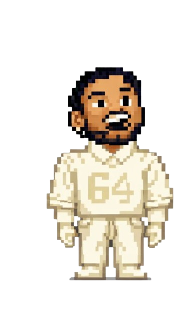

La presentación de Bad Bunny en el Super Bowl LIV puede interpretarse como una protesta política porque utilizó uno de los escenarios mediáticos más influyentes del mundo para visibilizar no solo las luchas internas de Puerto Rico, sino también las tensiones políticas entre la isla y Estados Unidos.
Al aparecer con símbolos como la bandera puertorriqueña y referencias a las movilizaciones sociales de 2019, el artista convirtió su actuación en una forma de reivindicación de identidad y resistencia.
Además, su presencia también puede leerse como una crítica indirecta a las políticas migratorias y discursos nacionalistas promovidos por el gobierno de Donald Trump, que han afectado a comunidades latinas, utilizando la cultura y la música para cuestionar esas posturas desde un espacio tradicionalmente dominado por narrativas estadounidenses.

La presentación de Bad Bunny en el Super Bowl LIV resultó molesta para Donald Trump y para parte de sus seguidores vinculados al movimiento Make America Great Again porque interpretaron el espectáculo como una politización de un evento considerado "patriótico" y representativo de Estados Unidos.
El uso visible de símbolos de Puerto Rico y la reivindicación de identidades latinas fue visto por ese sector como un desafío a la idea de una cultura estadounidense homogénea, especialmente en un contexto en el que el discurso político de Trump enfatizaba el nacionalismo y políticas más restrictivas hacia la inmigración.
Por esa razón, surgió la idea de promover una transmisión o narrativa "all-American", enfocada únicamente en símbolos y artistas percibidos como tradicionalmente estadounidenses, como una forma de contrarrestar lo que consideraban una apropiación política del evento y reafirmar su visión de identidad nacional.